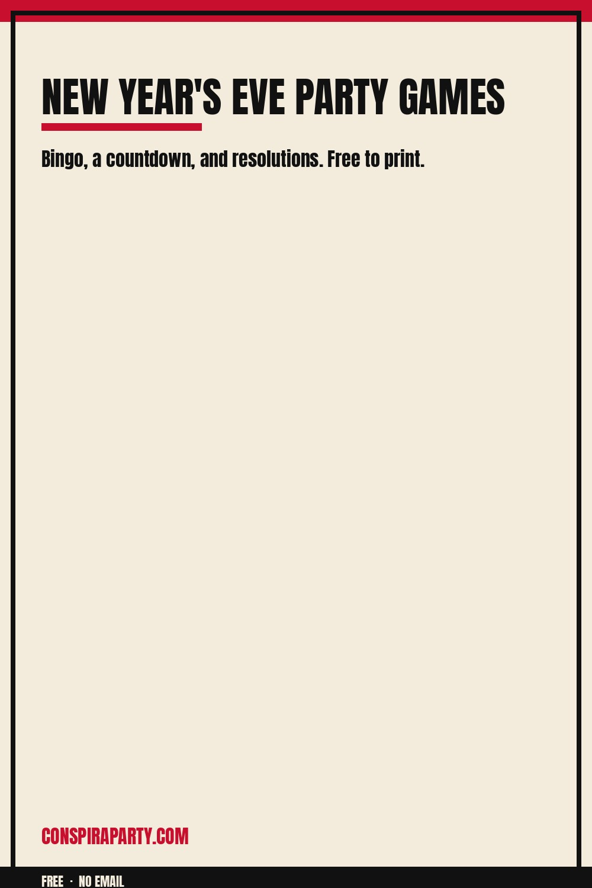

New Year's Eve party games for adults
A conspiracy-flavored pack you can print before midnight: bingo, leaked 2027 prediction cards, a countdown game, and resolution would-you-rather. No email.
The Etsy holiday sale is 20% off party kits through Dec 1. It is applied at checkout. No code needed.

NYE conspiracy bingo
Mark a square when it happens. Five in a row wins the right to pick the first song after midnight. Center is free.
2027 predictions the Committee has leaked
Read a prompt out loud. Everyone writes a prediction. Seal the cards. Open them next New Year. For cards you can cut apart, use the free New Year prediction cards.
- The snack that becomes a problem by March: ________
- The app everyone deletes, then reinstalls: ________
- The trend that was already over before the ball dropped: ________
- The friend who says they are “taking a break from plans”: ________
- The headline that sounds fake and is not: ________
- The kitchen gadget bought in January and used twice: ________
Want the longer party list? Funny New Year's party games is the companion page.
The ten-minute countdown
Start at 11:50. Each minute, one person reads a leaked prediction from the sheet above, or invents one. The room points: already true, or not yet. Keep score on a napkin. At midnight the person with the most “already true” votes picks the first song. If there is a tie, the song is 30 seconds long and then you eat.
- 11:50 to 11:55: one prediction a minute. No speeches.
- 11:55: everyone names one thing they are glad is over. One sentence.
- 11:59: phones down. The person closest to the snacks watches the clock.
- Midnight: song, then the napkin score, then the cookies.
Resolution would you rather
Point left or right. A tie means you both do the easier one for a week and report back. Stop when the countdown starts.
- Wake up at the same time every day, or go to bed at the same time and let the morning happen.
- Cook dinner four nights a week, or do the dishes every night someone else cooks.
- Read twelve books, or finish the one book already on the nightstand.
- Walk after dinner, or leave the group chat on mute until noon.
- Learn one recipe well, or stop buying the snack you only eat in the car.
- Say no to one standing plan, or say yes to one plan you usually dodge.
- Put the phone in another room at dinner, or answer the text you have been orbiting.
- Tell the group your resolution, or write it on a prediction card and hide it until next year.
Party supplies
Hats, noisemakers, toasting flutes, midnight poppers, 2027 plates and napkins, and photo-booth props for the NYE games and the free prediction cards. The printables work without them.
- Shappy New Year’s Eve party kit for 12 guests (48 pieces: top hats, tiaras, horns and noisemakers) — $29.99. In stock. Black, gold and silver. The pack has 6 hats and 6 tiaras (plus 36 noisemakers/horns/blowouts), so not every guest gets both a hat and a tiara. Manufacturer age 15+.
- JOLLY CHEF gold-rim plastic champagne flutes, 5 oz, 50-pack — $20.99. In stock. One-time price $20.99 (a Subscribe & Save price of $19.94 was also shown). They snap together. A noticeable number of reviews mention cracks or leaks, so order a few extras and assemble gently. Not for the dishwasher or microwave.
- Fizzboom biodegradable confetti poppers, 12-inch, 12-pack — $26.97. In stock. Twist to launch, billed as indoor/outdoor and biodegradable. The listing is non-returnable because of hazardous-materials shipping rules; you can still request a refund if a pack arrives damaged.
- Neenah Exact Index cardstock, 110 lb, 8.5 × 11, 250 sheets — $24.87. In stock. Amazon.com offer $24.87; a marketplace offer from Prime National Distribution was $22.39. Mixed reviews on whether it feels like a full 110 lb — still a solid sheet for badges, cards, tags and signs.
- Hallswl 2027 Happy New Year plates and napkins set, 175 pieces (serves 25) — $22.99. In stock, Amazon’s Choice. 25 dinner plates, 25 dessert plates, 25 cups, 25 napkins and 25 sets of forks, spoons and knives, in black and gold with “Happy New Year” and “Cheers.” Do not microwave. 4.3 stars from 36 reviews. Sold by HallSWL and ships from Amazon. The listing title says 2027; the printed design is the classic “Happy New Year / Cheers” motif and may not show the year.
- Temicle 2027 New Year’s Eve photo booth props, 35-piece black-and-gold set — $7.99. In stock. Cardstock props with wooden sticks and adhesive dots, including 2027 signs, hats, glasses, champagne motifs and countdown clocks. Only 3 customer reviews (all 5 stars) so far, so treat the rating as thin evidence. Sold by SunlunTech and ships from Amazon. The page also offers a “Love” theme option — use the New Year’s / 2027 listing.
As an Amazon Associate I earn from qualifying purchases. Prices were read on the Amazon.com product pages on Sunday, November 15, 2026 (America/Denver) and will change. These are optional add-ons — you do not need them to print or play.
More New Year's Eve party ideas
These sit beside the free sheets above. Use one or two, not all of them, unless the party is going past midnight.
Top secret prediction cards
Everyone writes predictions, seals them, and you open them next New Year. Download the free prediction cards.
Who Leaked the Files?
A printable mystery party game for 6 to 12 guests. Unmask the leaker before midnight. Read the briefing or buy the party kit. Also on Etsy.
Conspiracy of the Year awards
Vote on the wildest theory your group heard all year. The Conspiraparty kit has badges, bingo and decor if you want certificates to hand out.
Play on your phones
Our free phone party game works for any size group, including people who show up late.
Snack table, classified
Label the food with our free food tent cards.
If you want a full kit
These sheets are free. The kits are the bigger printables, if the night grows a theme.
- Free New Year prediction cards PDF, if you want cards you can cut.
- The Conspiraparty party kit is $12.99 and includes invitations, labels, badges, and games. Also on Etsy.
- Funny Christmas party games if this party is still in December.
- PowerPoint Night topic generator if someone demands slides before midnight.
The Etsy holiday sale is 20% off party kits through Dec 1. It is applied at checkout. No code needed.
FAQ
Are these New Year's Eve games free to print?
Yes. Use Print these sheets. No email. Bingo, prediction prompts, the countdown, and would-you-rather are all on this page.
How many people do they work for?
Bingo and would-you-rather work for a living room or a crowded apartment. The countdown needs one reader and a napkin. Prediction cards work for any size, including a couple.
What if we already have prediction cards?
Use the free card PDF for the blanks, and this page for the prompts and the countdown.
What are good New Year's Eve games for adults?
Prediction cards, a mystery game like Who Leaked the Files?, conspiracy-themed bingo, and a ten-minute countdown all work well and need almost no setup.
Can kids play too?
Yes. Prediction cards and the UFO coloring page are great for kids staying up for midnight.